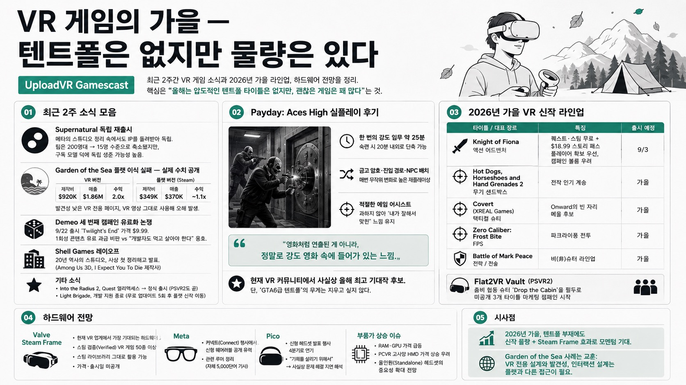

UploadVRMORNING DIGEST · 2026-08-31 · UploadVR🎬 영상
VR 게임의 가을 — 텐트폴은 없지만 물량은 있다 (UploadVR Gamescast)
UploadVR의 마이크 존슨과 제임스 타키오가 최근 2주간 VR 게임 소식을 정리하고, 4개월 남은 2026년 가을 VR 라인업과 하드웨어 전망을 짚는다. 핵심은 "올해는 압도적인 텐트폴 타이틀은 없지만, 괜찮은 게임은 꽤 많다"는 것.

01최근 2주 소식 모음
Supernatural 독립 재출시: 메타가 올해 초 여러 퍼스트파티 스튜디오(카모플라지·산자루·아마추어 등)를 정리하면서, 피트니스 앱 Supernatural 개발사 Within만은 완전히 폐쇄하지 않고 IP를 돌려주며 독립을 허용했다. 200명대였던 팀이 15명 수준으로 줄었지만, 구독 기반 수익모델 덕에 원타임 구매작(배트맨 등)보다 독립 생존 가능성이 높다는 평가.
Garden of the Sea 플랫스크린 이식 실패 — 실제 수치 공개: 코지 라이프심 VR작을 스팀 플랫버전으로 이식했으나, CEO가 LinkedIn에 직접 성적을 공개. VR판은 제작비 92만 달러로 186만 달러를 벌어 두 배 수익을 냈지만, 플랫판은 제작비 34.9만 달러에 매출 37만 달러로 사실상 손익분기점 수준. VR 전용 스토어 페이지를 별도로 만들어 발견성이 떨어졌고, 마케팅에도 VR 풋티지를 그대로 써 '이거 VR게임 아니야?'라는 오해를 산 점이 원인으로 꼽혔다.
Demeo 세 번째 캠페인 유료화 논쟁: 9월 22일 출시하는 3번째 캠페인 'Twilight's End'가 9.99달러 — 1회성 콘텐츠에 유료 과금이라는 비판이 있었지만, 진행자들은 "개발자도 먹고 살아야 한다"며 옹호.
레이오프: 20년 역사의 Shell Games(Among Us 3D, I Expect You To Die 제작사)가 사상 첫 정리해고를 발표 — 2026년 VR 업계 레이오프 목록에 또 하나 추가.
기타: Into the Radius 2가 Quest 얼리액세스를 벗어나 정식 출시(PSVR2도 곧 출시), Light Brigade가 개발 지원 종료(무료 업데이트 5회 제공 후 개발사는 플랫 신작으로 이동).
02Payday: Aces High 실플레이 후기
8월 12일 개발사 Bash Brothers Games와 함께 실제 강도 미션(금고 드릴링)을 플레이한 소감 — "영화처럼 연출된 게 아니라, 정말로 강도 영화 속에 들어가 있는 느낌"이라는 평가. 한 번의 강도 임무에 약 25분 소요, 숙련되면 20분 내외로 단축 가능해 '짧고 굵은' 반복 플레이 루프에 적합.
금고 암호 위치·건물 진입 경로·NPC 배치가 매번 무작위로 바뀌는 절차적 요소가 내장돼 재플레이성을 높인다.
조준 시 미묘한 보정(에임 어시스트)이 있지만 과하지 않게 균형이 잡혀 있어 '내가 잘해서 헤드샷을 맞힌' 느낌을 해치지 않는다는 평.
현재 VR 커뮤니티에서 사실상 올해의 최고 기대작 후보로 꼽히지만, 진행자들은 "GTA6급 텐트폴"이라는 무게를 지우고 싶지는 않다고 선을 그었다.
032026년 가을 VR 신작 라인업
Knight of Fiona(9월 3일): 퀘스트·스팀 무료 출시 + 18.99달러 스토리 패스로 캠페인 콘텐츠 언락. 플레이어 수 확보를 우선한 결정이라 스토리 캠페인 리소스가 줄어들지 않을지 우려가 제기됨.
Hot Dogs, Horseshoes and Hand Grenades 2, XREAL Games의 Covert(택티컬 슈터, 사실상 개점휴업 상태인 Onward의 빈자리를 메울 후보)와 Zero Caliber: Frost Bite(파크라이풍) 등 슈터 다수.
비(非)슈터 계열: Knight of Fiona, Battle of Mark Peace 등도 함께 출시 예정.
Flat2VR Vault: PSVR2용 좀비 협동 슈터 'Drop the Cabin'을 필두로, 소니 前 임원 슈헤이 요시다 등 유명 플레이스테이션 유튜버를 앞세운 마케팅 캠페인 시작 — 아직 공개 안 된 3개 타이틀에 대한 기대감 조성.
04하드웨어 전망
밸브 Steam Frame: "지금 VR 업계에서 가장 기대되는 하드웨어"로 꼽힘. 메타 생태계에 대한 거부감이 있던 잠재 유저층을 끌어들일 것으로 기대되며, 이미 스팀 검증(Verified) VR 게임이 50종 이상 확보돼 스팀 라이브러리를 그대로 활용 가능하다는 점이 강점. 정확한 가격·출시일은 아직 미공개.
메타: 커넥트(Connect) 행사에서 신형 웨어러블(글래스 혹은 헤드셋) 공개가 유력, 관련 루머를 정리한 5,000단어 분량의 자체 기사도 소개.
Pico: 신형 헤드셋 발표 행사를 계획했다가 돌연 4분기로 연기 — "기회를 살리기 위해서"라는 모호한 해명에 진행자들은 사실상 문제 해결을 위한 지연으로 해석.
부품가 상승 이슈: 엔비디아 실적발표에서 부품 가격 상승이 언급된 것과 관련해, RAM·GPU 가격 급등이 PCVR 고사양 헤드셋(Pimax 등)을 소비자 가격대에서 더 멀어지게 만들 수 있어, 오히려 올인원 스탠드얼론 헤드셋의 중요성이 커질 수 있다는 전망이 나왔다.
05시사점
올해는 지난해 데드풀급 '텐트폴' 단일 타이틀은 없지만, Payday: Aces High를 필두로 한 신작 물량과 Steam Frame이라는 하드웨어 이벤트가 가을 VR 업계 모멘텀을 이끌 전망이다.
Garden of the Sea 사례는 VR 전용으로 설계된 게임을 플랫스크린으로 그대로 이식하는 전략의 한계를 보여준다 — 발견성과 인터랙션 설계 모두 VR과 플랫은 다른 접근이 필요하다.